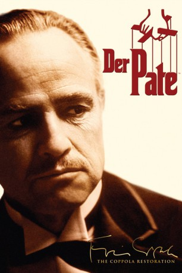
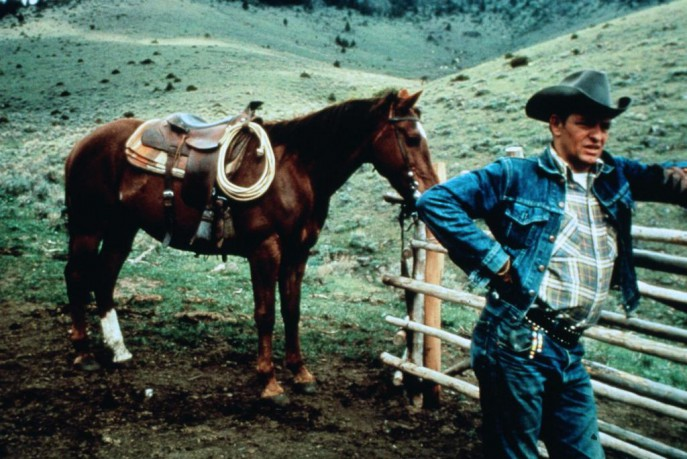
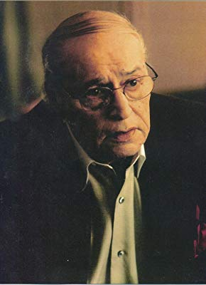
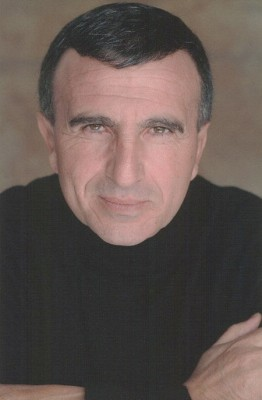

#2873 Der Pate
Alternativ: The Godfather (Englischer Titel)
Auszeichnungen: 3 Oscars gewonnen für 8 Oscars nominiert 5 GoldenGlobes gewonnen 1 BAFTA-Awards gewonnen
 
 IMDB-Wertung: 9.2 / 10
IMDB-Wertung: 9.2 / 10  IMDB-TOP-Platzierung: 2
IMDB-TOP-Platzierung: 2  Metascore: 100
Metascore: 100 
Don Vito Corleone ist der Kopf einer der einflußreichsten Mafia-Familien New Yorks. Als die anderen Familien der Stadt beschließen, neben Glücksspiel und Schutzgelderpressungen nun auch den Handel mit Drogen als Erwerbsquelle zu nutzen und sich Don Corleone diesem Vorhaben nicht anschließen möchte, wird er zum Ziel eines hinterhältigen Mordanschlags. Nun steht Vitos Sohn Michael in der Verantwortung, in die Fußstapfen seines Vaters zu treten, obwohl er mit den Gechäften der Familie bis dato nichts zu tun haben wollte.
Jahr: 1972
Dauer: 175 Minuten
FSK: 16
Land: USA Studio: ParamountTonspuren: DD5.1 - ,
Untertitel: Deutsch, Englisch,
Auflösung: 1080p (1920x1080) Größe: 14848 MB
Genre: Drama, Krimi
Regisseur:  Francis Ford Coppola
Francis Ford Coppola
Drehbuch: Mario Puzo, Francis Ford Coppola, Mario Puzo
Soundtrack: Nino Rota
Darsteller:
 Marlon Brando als Don Vito Corleone
Marlon Brando als Don Vito Corleone Al Pacino als Michael Corleone
Al Pacino als Michael Corleone James Caan als Sonny Corleone
James Caan als Sonny Corleone- Richard S. Castellano als Clemenza
 Robert Duvall als Tom Hagen
Robert Duvall als Tom Hagen Sterling Hayden als Capt. McCluskey
Sterling Hayden als Capt. McCluskey- John Marley als Jack Woltz
 Richard Conte als Barzini
Richard Conte als Barzini- Al Lettieri als Sollozzo
 Diane Keaton als Kay Adams
Diane Keaton als Kay Adams- Abe Vigoda als Tessio
 Talia Shire als Connie
Talia Shire als Connie Gianni Russo als Carlo
Gianni Russo als Carlo John Cazale als Fredo
John Cazale als Fredo Rudy Bond als Cuneo
Rudy Bond als Cuneo- Al Martino als Johnny Fontane
- Morgana King als Mama Corleone
- Lenny Montana als Luca Brasi
- John Martino als Paulie Gatto
-  Richard Bright als Neri
 Alex Rocco als Moe Greene
Alex Rocco als Moe Greene- Tony Giorgio als Bruno Tattaglia
 Vito Scotti als Nazorine
Vito Scotti als Nazorine- Julie Gregg als Sandra Corleone
- Simonetta Stefanelli als Apollonia - Sicilian Sequence
 Franco Citti als Calo - Sicilian Sequence
Franco Citti als Calo - Sicilian Sequence Saro Urzì als Vitelli - Sicilian Sequence
Saro Urzì als Vitelli - Sicilian Sequence- Chris Anastasio als Policeman (uncredited)
- Carmine Coppola als Piano Player in Montage (uncredited)
- Gian-Carlo Coppola als Baptism Observer (uncredited)
 Roman Coppola als Boy on Street Who Attended Funeral (uncredited)
Roman Coppola als Boy on Street Who Attended Funeral (uncredited) Sofia Coppola als Michael Francis Rizzi (uncredited)
Sofia Coppola als Michael Francis Rizzi (uncredited)- Ron Gilbert als Usher in Bridal Party (uncredited)
 Randy Jurgensen als Sonny's Killer #1 (uncredited)
Randy Jurgensen als Sonny's Killer #1 (uncredited)- Tony King als Tony - Stablehand (uncredited)
-  Tony Lip als Wedding Guest (uncredited)
- Lou Martini Jr. als Boy at Wedding (uncredited)
-  Frank Sivero als Street Extra (uncredited)
 Joe Spinell als Willi Cicci (uncredited)
Joe Spinell als Willi Cicci (uncredited) Nick Vallelonga als Wedding Party Guest (uncredited)
Nick Vallelonga als Wedding Party Guest (uncredited)- Matthew Vlahakis als Clemenza's Son (uncredited)
- Salvatore Corsitto als Bonasera
- Tere Livrano als Theresa Hagen
- Victor Rendina als Philip Tattaglia
- Jeannie Linero als Lucy Mancini
- Ardell Sheridan als Mrs. Clemenza
- Angelo Infanti als Fabrizio - Sicilian Sequence
- Corrado Gaipa als Don Tommasino - Sicilian Sequence
- Norm Bacchiocchi als Luca Brasi's Assassin (uncredited)
- Max Brandt als Extra in Furniture-Moving Scene (uncredited)
Datei: X:\3-Trilogie(N-Z)\Pate\Pate 1, Der (1972, FSK16, 1920x1080).mkv seit 29.12.2015
Festplatte: HD Collection-3(N-Z)-6(A-Z)
 Alle Filme aus Gruppe '3-Trilogie(N-Z)\Pate'
Alle Filme aus Gruppe '3-Trilogie(N-Z)\Pate'